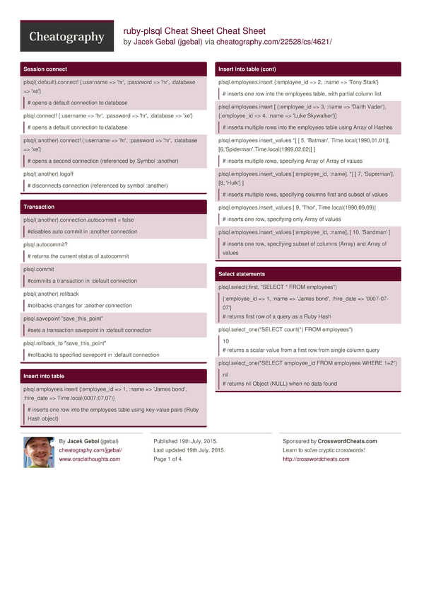

In my previous posts I did some writngs on UTPLSQL and ruby-plsql. For long time, while developing Oracle code I was using ruby-plsql to do test driven development for SQL and PL/SQL. I used to frequently forget how to use some of the functionalities of ruby-plsql, specially after having a longer break and so each time I was referring the Unit Tests supplied for the ruby-plsql library as a reference. They are really nicely documenting how things work and how can they be used. It usually took me few minutes to find the thing I needed.
While I was actively using ruby-plsql for testing Oracle SQL and PLSQL code, it never occurred to me, that it would be nice to have some kind of cheat sheet, and so I wasted the valuable seconds and minutes to figure out how to do things I needed to do.
This week however, Turntablez posted a suggestion on ruby-plsql-spec github project page that a cheat sheet would be something of a use.
It was a really great idea, saves precious minutes when you need to use something you're not used to or just don't do every day.
So here it is, fully downloadable, editable and hopefully usable Cheat Sheet for ruby-plsql.
It's not a reference, it's not complete (or official), but hopefully it's a good overview and a fast help if you need to see how things work.
Update
If you prefer a more visual/printable form, you might want to check out the same Cheat Sheet on http://www.cheatography.com/jgebal/cheat-sheets/ruby-plsql-cheat-sheet/
Or just download the PDF version.

Session / connection settings¶
plsql(:default).connect! {:username => 'hr', :password => 'hr', :database => 'xe'} plsql.connect! {:username => 'hr', :password => 'hr', :database => 'xe'}
opens a connection to database (referenced by Symbol :default, or no symbol at all)¶
plsql(:another).connect! {:username => 'hr', :password => 'hr', :database => 'xe'}
opens a second connection (referenced by Symbol :another)¶
plsql.connection.prefetch_rows = 100
sets number of rows to be fetched at once from the database for default connection¶
plsql.connection.database_version
[11, 2, 0, 2]¶
returns version of database as an array of elements: major, minor, update, patch¶
plsql.dbms_output_stream = STDOUT
sets redirects dbms_output to standard output (console)¶
works even if exception on code occurs¶
plsql.dbms_output_buffer_size = 100_000
sets dbms_output buffer size to 100,000¶
plsql(:another).logoff
disconnects connection (referenced by symbol :another) from the database¶
plsql.hr.class
PLSQL::Schema¶
You can reference objects in other schemas using schema name¶
Transaction¶
plsql(:another).connection.autocommit = false
disables auto commit in :another connection¶
plsql.autocommit?
true¶
returns the current status of autocommit for connection¶
plsql.commit
commits a transaction in :default connection¶
plsql(:another).rollback
rollbacks all uncommited changes in the current transaction for :another connection¶
plsql.savepoint "save_this_point"
sets a transaction savepoint in :default connection¶
plsql.rollback_to "save_this_point"
performs a rollback of transaction to specified savepoint in :default connection¶
Execute SQL statement or PLSQL block¶
plsql.execute "CREATE SYNONYM employees_synonym FOR employees"
executes any given string as a SQL or PLSQL statement¶
plsql.execute <<-SQL CREATE TABLE test_employees ( employee_id NUMBER(15), name VARCHAR2(50), hire_date DATE ) SQL
executes multi-line string statements too¶
Insert into table¶
plsql.employees.insert {:employee_id => 1, :name => 'James bond', :hire_date => Time.local(0007,07,07)}
inserts one row into the employees table using key-value pairs (Ruby Hash object)¶
plsql.employees.insert {:employee_id => 2, :name => 'Tony Stark'}
inserts one row into the employees table, with partial column list¶
plsql.employees.insert [ {:employee_id => 3, :name => 'Darth Vader'}, {:employee_id => 4, :name => 'Luke Skywalker'}]
inserts multiple rows into the employees table using Array of Hashes¶
plsql.employees.insert_values *[ [ 5, 'Batman', Time.local(1990,01,01)], [6,'Spiderman',Time.local(1999,02,02)] ]
inserts multiple rows, specifying Array of Array of values¶
plsql.employees.insert_values [:employee_id, :name], *[ [ 7, 'Superman'], [8, 'Hulk'] ]
inserts multiple rows, specifying columns first and subset of values¶
plsql.employees.insert_values [ 9, 'Thor', Time.local(1990,09,09)]
inserts one row, specifying only Array of values¶
plsql.employees.insert_values [:employee_id, :name], [ 10, 'Sandman' ]
inserts one row, specifying subset of columns (Array) and Array of values¶
Select statements¶
plsql.select(:first, "SELECT * FROM employees")
{:employee_id => 1, :name => 'James bond', :hire_date => '0007-07-07'}¶
returns first row of a query as a Ruby Hash¶
plsql.select_one("SELECT count(*) FROM employees")
10¶
returns a scalar value from a first row from single column query¶
plsql.select_one("SELECT employee_id FROM employees WHERE 1=2")
nil¶
returns nil Object (NULL) when no data found¶
plsql.select(:all, "SELECT * FROM employees ORDER BY employee_id")
[ {:employee_id => 1, :name => 'James bond', :hire_date => '0007-07-07'}, {...}, ... ]¶
returns all rows from a query as an Array of Hashes¶
Select from a table/view¶
plsql.employees.select(:first, "ORDER BY employee_id") plsql.employees.first("ORDER BY employee_id")
{:employee_id => 1, :name => 'James bond', :hire_date => '0007-07-07'}¶
returns first row from a table¶
plsql.employees.select(:first, "WHERE employee_id = :a", 2) plsql.employees.first("WHERE employee_id = :a", 2) plsql.employees.first(:employee_id => 2)
{:employee_id => 2, :name => 'Tony Stark', :hire_date => nil}¶
returns first row from a table with WHERE condition¶
plsql.employees.select(:all, "ORDER BY employee_id") plsql.employees.all("ORDER BY employee_id") plsql.employees.all(:order_by => :employee_id)
[ {:employee_id => 1, :name => 'James bond', :hire_date => '0007-07-07'}, {...}, ... ]¶
returns all rows from a table sorted using ORDER BY¶
plsql.employees.all(:employee_id => 2, :order_by => :employee_id)
[ {:employee_id => 2, :name => 'Tony Stark', :hire_date => nil} ]¶
returns all rows from a table with WHERE condition¶
plsql.employees.all "WHERE employee_id = 2 AND hire_date IS NULL" plsql.employees.all( {:employee_id => 2, :hire_date => nil} )
[ {:employee_id => 2, :name => 'Tony Stark', :hire_date => nil} ]¶
returns all rows from a table with WHERE condition on NULL value¶
plsql.employees.all(:hire_date => :is_not_null)
[ {:employee_id => 1, :name => 'James bond', :hire_date => '0007-07-07'}, {...}, ... ]¶
returns all rows from a table with WHERE condition on NOT NULL value¶
plsql.employees.select(:count) plsql.employees.count
10¶
returns count of rows in the table¶
Update table/view¶
plsql.employees.update :name => 'Test'
updates field name in all records¶
plsql.employees.update :name => 'Superman II', :where => {:employee_id => 7} plsql.employees.update :name => 'Superman II', :where => "employee_id = 7"
updates field in table with a where condition¶
plsql.employees.update :name => 'Superman II', :hire_date => Time.local(2000,01,01), :where => "employee_id = 7"
updates two fields in table with a where condition¶
[/ruby] [ruby gutter="0" highlight="1,8,39,53,67,94,107,119,131"]
Delete from table/view¶
plsql.employees.delete :employee_id => 10 plsql.employees.delete "employee_id = 10"
delete record in table with WHERE condition¶
Table/View meta-data¶
plsql.execute "CREATE OR REPLACE VIEW employees_v AS SELECT * FROM employees"
creates a VIEW¶
plsql.employees_v.class
PLSQL::View¶
The employees_v Object is of PLSQL::View class¶
plsql.employees.class
PLSQL::Table¶
The employees Object is of PLSQL::Table class¶
plsql.employees_synonym.class
PLSQL::Table¶
The emplyees_synonym Object is also of PLSQL::Table class¶
plsql.employees.column_names plsql.employees_v.column_names
[ employee_id, name, hire_date ]¶
returns all column names in table¶
plsql.employees.columns plsql.employees_v.columns
{ :employee_id => {¶
:position=>1, :data_type=>"NUMBER", :data_length=>22, :data_precision=>15, :data_scale=>0, :char_used=>nil, :type_owner=>nil, :type_name=>nil, :sql_type_name=>nil, :nullable => false, :data_default => nil} , ...}
returns column meta-data¶
Sequence¶
plsql.execute "CREATE SEQUENCE employees_seq"
executes a statement to create a sequence¶
plsql.employees_seq.nextval
1¶
returns NEXTVAL for sequence¶
plsql.employees_seq.currval
1¶
returns CURRVAL for sequence¶
Package¶
plsql.test_package.class
PLSQL::Package¶
A plsql package is Object of PLSQL::Package class¶
plsql.test_package.test_variable = 1
Assigns a value to package public variable¶
plsql.test_package.test_variable
1¶
Reads a value to package public variable¶
Procedure / Function¶
given a FUNCTION uppercase( p_string VARCHAR2 ) RETURN VARCHAR2¶
plsql.uppercase( 'xxx' ) plsql.uppercase( :p_string => 'xxx' )
'XXX'¶
executes the function binding parameters by position or name and returns scalar Object as a value¶
given a FUNCTION copy_function( p_from VARCHAR2, p_to OUT VARCHAR2, p_to_double OUT VARCHAR2 ) RETURN NUMBER¶
plsql.copy_function( 'abc', nil, nil) plsql.copy_function( :p_from => 'abc', :p_to => nil, :p_to_double => nil) plsql.copy_function( 'abc' )
[ 3, { :p_to => "abc", :p_to_double => "abcabc" } ]¶
executes the function and returns 2 element Array¶
with first element being function result and second element being a Hash of OUT parameters¶
Given a PROCEDURE copy_proc( p_from VARCHAR2, p_to OUT VARCHAR2, p_to_double OUT VARCHAR2 )¶
plsql.copy_proc( 'abc', nil, nil) plsql.copy_proc( :p_from => 'abc', :p_to => nil, :p_to_double => nil) plsql.copy_proc( 'abc' )
{ :p_to => 'abc', :p_to_double => 'abcabc' }¶
executes the procedure and returns a Hash of OUT parameters as a :name => 'value' pairs¶
Record types/Object Types¶
Given a FUNCTION get_full_name( p_employee employees%ROWTYPE ) RETURN VARCHAR2¶
plsql.get_full_name( {:p_employee => {:employee_id => 2, :first_name => 'Tony', :last_name => 'Stark', :hire_date => nil} } ) plsql.get_full_name( {:employee_id => 2, :first_name => 'Tony', :last_name => 'Stark', :hire_date => nil} ) plsql.get_full_name( {'EMPLOYEE_ID' => 2, 'first_name' => 'Tony', 'last_NaMe' => 'Stark', 'hire_date' => nil} )
'Tony Stark'¶
Accepts a record as a parameter (by name or by position) and executes the function returning String (VARCHAR2)¶
Record fields can be defined as a Symbol (:employee_id) or as a String ('employee_id')¶
Works the same way with package level record types and Oracle object types¶
Varrays and Nested Tables¶
Given a TYPE table_of_int IS TABLE OF INTEGER;¶
Given FUNCTION sum_items(p_items TABLE_OF_INT) RETURN INTEGER¶
plsql.sum_items( [1,2,3,4,5] ) plsql.sum_items( :p_items => [1,2,3,4,5] )
15¶
Nested tables are passed in and returned as Ruby Array Object type¶
Works the same way for VARRAYS¶
Associative arrays (aka plsql tables, index-by tables)¶
Given a package MY_PACKAGE¶
contains TYPE index_table_of_int IS TABLE OF INTEGER INDEX BY BINARY_INTEGER;¶
contains FUNCTION sum_items(p_items INDEX_TABLE_OF_INT) RETURN INTEGER;¶
plsql.my_package.sum_items( { -1 => 1, 5 => 2, 3 => 3, 4 => 4} )
10¶
Associative arrays are passed in and returned as a Ruby Hash containing list of key value pairs¶
Where key is the element position in Array and value is the value at the position¶
Cursors¶
Given a FUNCTION get_empolyees RETURN SYS_REFCURSOR¶
plsql.get_employees do |result| result.columns end
[ :employee_id, :name, :hire_date ]¶
returns the list of columns of a cursor as an Array¶
plsql.get_employees do |result| result.fetch_hash_all end plsql.get_employees{ |cursor| cursor.fetch_hash_all } plsql.get_employees{ |any_name| any_name.fetch_hash_all }
[ {:employee_id => 1, :name => 'James bond', :hire_date => '0007-07-07'}, {...}, ... ]¶
fetches all rows from a cursor and returns them as an Array of Hashes¶
cursor needs to be accessed inside a block ( do .. end / { .. } )¶
as cursors are automatically closed after the function call ends¶
plsql.get_employees{ |result| result.fetch_hash }
{:employee_id => 1, :name => 'James bond', :hire_date => '0007-07-07'}¶
fetches one row from a cursor and returns it as a Hash¶
plsql.get_employees{ |result| result.fetch }
[1, 'James bond', '0007-07-07']¶
fetches one row from a cursor and returns it as a Array of values¶
plsql.get_employees{ |result| result.fetch_all }
[[1, 'James bond', '0007-07-07'], [...], ... ]¶
fetches all rows from a cursor and returns them as an Array of Arrays of values¶
[/ruby] If you like it, share it, rate it, comment it.